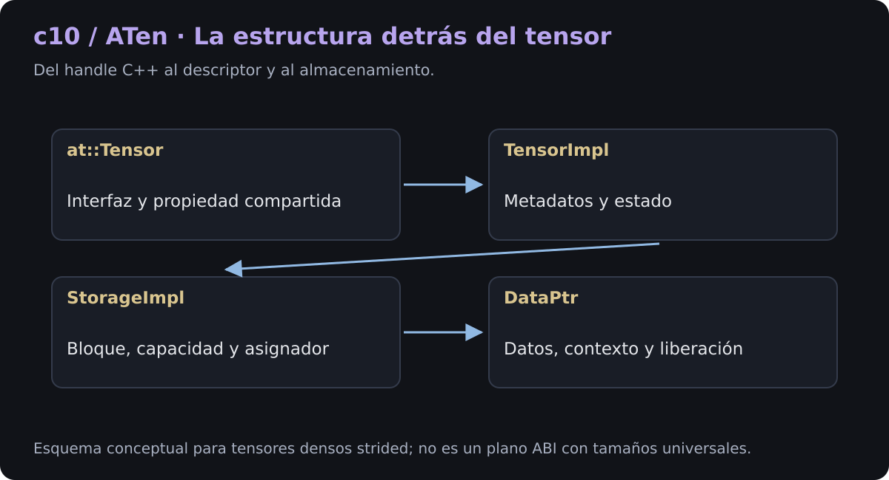
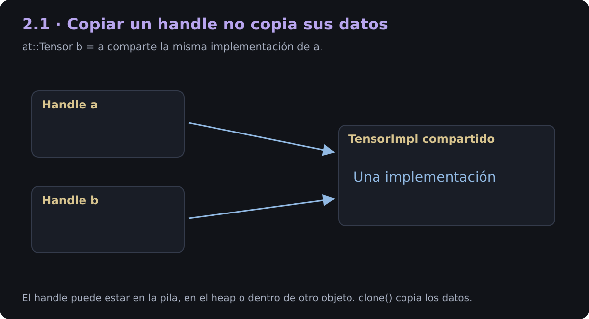
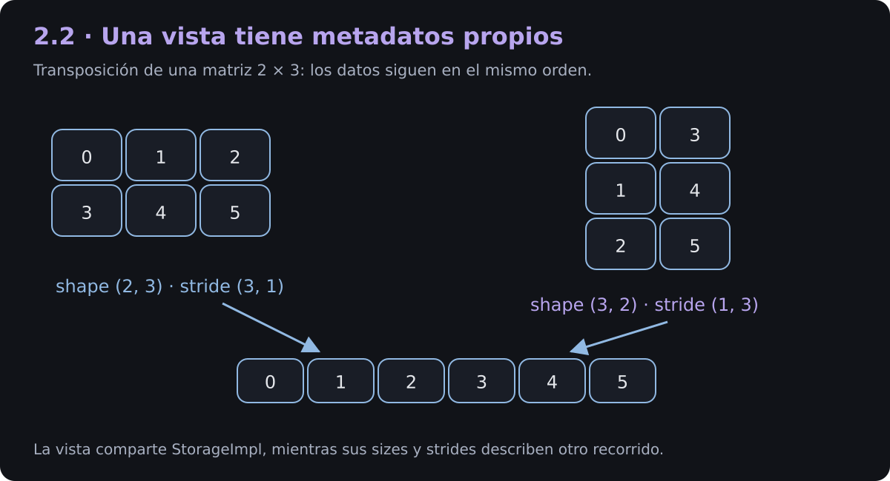
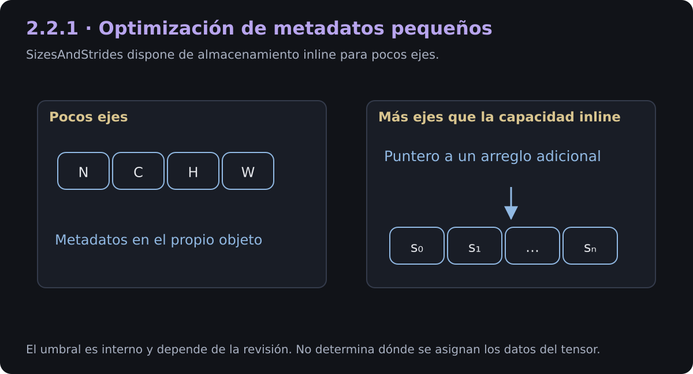
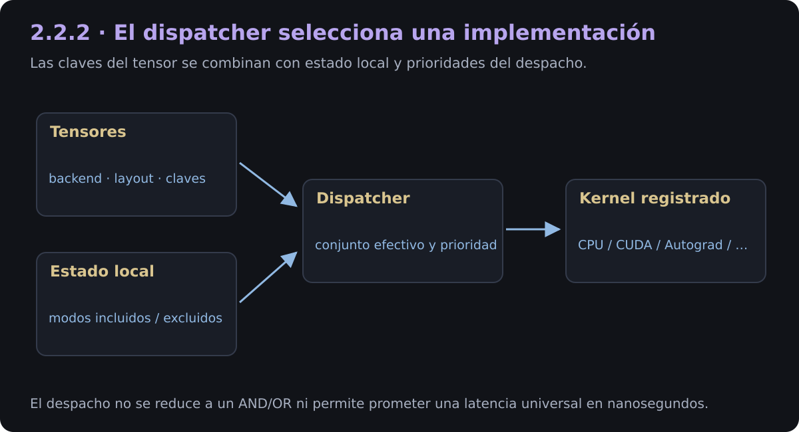
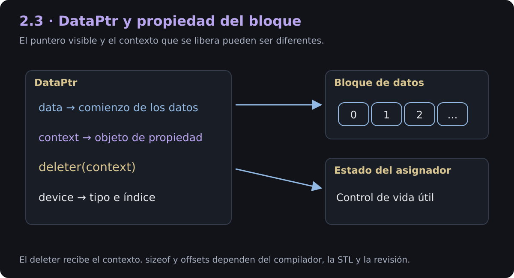
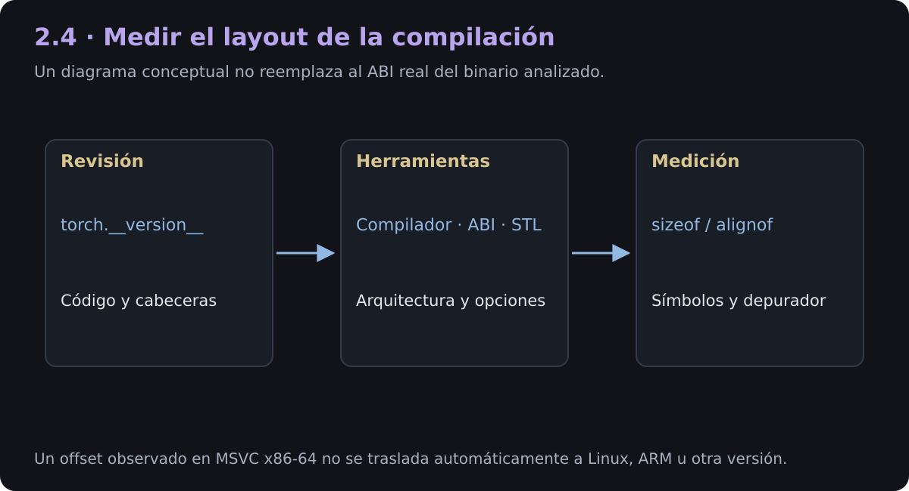
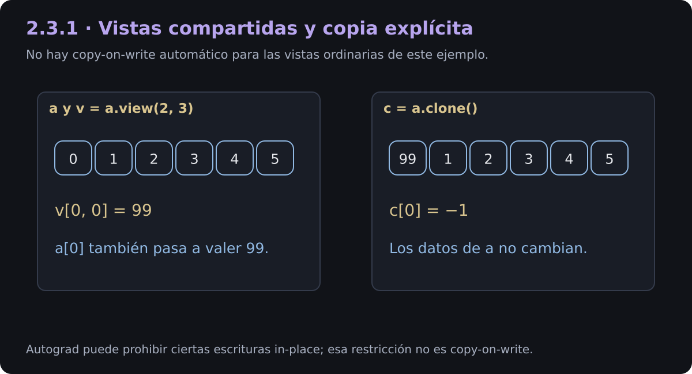

1. Introducción
Esta página sigue las capas que permiten representar un tensor denso de PyTorch en C++: at::Tensor, c10::TensorImpl, c10::StorageImpl y c10::DataPtr. Conecta el código de alto nivel con los metadatos y la propiedad del almacenamiento.
ATen proporciona una parte central de la API de tensores y operadores; c10 reúne abstracciones compartidas de bajo nivel. El objeto torch.Tensor de Python incorpora además su propia envoltura. No deben confundirse el tamaño de un objeto Python, el handle C++, el descriptor y los bytes del tensor.
Alcance: ejemplos densos con layout=torch.strided. Otros layouts, tensores meta, subclases y backends pueden requerir otra descripción. Los campos privados y el layout binario no constituyen una interfaz estable entre todas las versiones.

2. Desacoplamiento de diseño: TensorImpl y StorageImpl
La separación evita copiar los datos al crear muchas vistas. El descriptor conserva una interpretación lógica; el almacenamiento gestiona el bloque que la respalda.
Analogía: un plano de lectura indica dónde buscar cada elemento en un depósito. Cambiar el plano no exige mover los objetos del depósito. Dos planos distintos pueden seguir apuntando al mismo bloque.
2.1. at::Tensor: el handle C++
at::Tensor ofrece una interfaz de valor sobre una implementación compartida. En su jerarquía interviene TensorBase, que conserva un c10::intrusive_ptr a TensorImpl.
Un handle local puede vivir en la pila, pero también puede ser miembro de otro objeto o estar en el heap. No existe una regla que obligue a todo at::Tensor a vivir en la pila. Su tamaño debe medirse en la compilación analizada; no se debe atribuir al objeto Python el tamaño del handle C++.

2.1.1. ¿Por qué un puntero intrusivo?
Un puntero intrusivo conserva la información necesaria de conteo dentro del objeto administrado. Esto permite un diseño de propiedad compartida adaptado a las necesidades del runtime. La forma concreta de los contadores depende de la revisión; en las cabeceras de la compilación verificada aparece un contador combinado atómico.
No corresponde justificarlo diciendo que std::shared_ptr siempre requiere dos asignaciones: std::make_shared puede agrupar objeto y control en una sola asignación. Tampoco puede garantizarse una mejora universal de caché o un costo fijo en nanosegundos sin medir.
2.1.2. Copiar el handle, crear una vista y clonar
| Operación | Metadatos | Datos numéricos |
|---|---|---|
at::Tensor b = a |
Comparte la implementación referenciada | Comparte los datos |
a.transpose(0,1) |
Crea una interpretación de vista | Comparte el almacenamiento del caso denso |
a.clone() |
Produce otro tensor | Copia los datos |
Pasar por valor copia el handle y gestiona su referencia; no copia la matriz. Mover un handle tiene otra semántica. Para evitar copias de handles cuando no son necesarias, una función puede recibir const at::Tensor&, según su contrato.
2.2. c10::TensorImpl: metadatos y estado
El descriptor conserva información necesaria para interpretar el tensor y ejecutar operaciones. La lista siguiente expresa responsabilidades: no fija offsets privados portables.
| Componente | Responsabilidad |
|---|---|
| Sizes y strides | Forma y saltos del recorrido lógico |
| Offset de almacenamiento | Comienzo de la vista en unidades de elemento |
| Dtype | Interpretación y tamaño de los elementos |
| Dispositivo y claves de despacho | Selección y validación de implementaciones |
| Autograd y versión | Estado requerido por diferenciación y seguimiento de modificaciones |
| Handle de almacenamiento | Propiedad compartida del bloque en el caso denso |
Los gradientes de Autograd no están incrustados como valores numéricos dentro de un pequeño campo del descriptor: el estado se administra mediante estructuras asociadas y puede crearse cuando se necesita.

2.2.1. Componentes de la interpretación geométrica
2.2.1.1. Sizes, strides y storage_offset
Para índices válidos en un tensor denso strided:
El resultado está en elementos. Si se parte del puntero al inicio del almacenamiento, la dirección de byte es base + o * element_size. Si se parte de tensor.data_ptr(), el offset inicial de la vista ya está incorporado.
Las direcciones observadas son direcciones del proceso o del dispositivo. Identificarlas como «direcciones físicas de RAM» es incorrecto en el modelo normal de memoria virtual.
2.2.1.2. Optimización de vectores pequeños
La estructura interna c10::impl::SizesAndStrides agrupa tamaños y strides. Las cabeceras examinadas de PyTorch 2.15.0+cpu definen capacidad inline para cinco ejes. Cuando hay más ejes, esa implementación utiliza almacenamiento auxiliar para esos metadatos.
Este umbral no es una propiedad matemática de los tensores ni un requisito de la API. Tampoco dice dónde viven los datos numéricos: lo inline se refiere a metadatos dentro del objeto, no a alojar los números del tensor en la pila.

2.2.1.3. El dispatcher y DispatchKeySet
Las claves de despacho ayudan a seleccionar una implementación registrada de un operador. Intervienen los conjuntos asociados a las entradas, el estado local del hilo, las inclusiones y exclusiones de modos y las prioridades del sistema.
El despacho no se reduce a una única operación AND/OR. Los caminos de Autograd pueden envolver o volver a despachar operaciones; un modo de tensores ficticios no debe describirse simplemente como otra pieza de hardware. Las representaciones y los detalles de prioridad son internos.

2.2.1.4. Banderas y formatos de memoria
El descriptor puede conservar banderas y propiedades precalculadas sobre contigüidad, tamaños simbólicos y políticas internas. El número de bits, su orden y sus offsets dependen de la versión y compilación.
channels_last describe una disposición de memoria. Un tensor de imágenes puede mantener su forma lógica (N,C,H,W) mientras sus strides representan ese formato; no se debe afirmar que la forma lógica pasa necesariamente a (N,H,W,C).
2.3. c10::StorageImpl: propiedad del almacenamiento
En el caso estudiado, StorageImpl administra el puntero de datos, la capacidad en bytes, información del asignador y políticas como la posibilidad de redimensionar el almacenamiento. No conoce la forma matricial de cada tensor que lo utiliza.
Descriptor y datos son objetos diferentes. Los metadatos del runtime residen en memoria del host; el bloque numérico administrado puede pertenecer a CPU, CUDA u otro backend. No se debe situar todo StorageImpl en VRAM solo porque el tensor esté en GPU.
El almacenamiento también conoce el dispositivo mediante su DataPtr. Una tabla que le atribuya desconocimiento absoluto del dispositivo sería incorrecta.
2.3.1. Componentes de propiedad y asignación
2.3.1.1. c10::DataPtr: datos, contexto y liberación
DataPtr combina un dispositivo con un objeto de propiedad que distingue:
- Puntero de datos: dirección del bloque que leen los kernels.
- Contexto: objeto o estado que conserva lo necesario para liberar o devolver ese recurso.
- Deleter: función que recibe el contexto cuando corresponde liberar su propiedad.
En el código examinado, UniqueVoidPtr contiene void* data_ y un std::unique_ptr<void, DeleterFnPtr> para el contexto. El deleter recibe el contexto, que puede coincidir o no con el puntero de datos.

2.3.1.2. Tamaños, offsets y ABI
Las capturas originales de IDA muestran una compilación particular. No basta con ellas para asignar sus offsets a todas las versiones de PyTorch 2.x. Incluso el orden físico de un std::unique_ptr con deleter puede variar entre implementaciones de la biblioteca estándar.
Por eso sustituimos la tabla de offsets absolutos por una inspección reproducible de la compilación que se está usando. Al comparar una captura con código fuente, deben conservarse la revisión, arquitectura, compilador, ABI, STL y opciones del binario.
La tabla explicativa original también mezclaba tamaños y posiciones incompatibles entre sí. numel de 8 bytes no puede describirse mediante un intervalo de solo cuatro bytes. Esa información se debe contrastar con símbolos o un layout medido, en lugar de completar los huecos por intuición.

Inspección práctica con C++
El siguiente programa utiliza las cabeceras de ATen/LibTorch y muestra sizeof, alignof y propiedades del almacenamiento. Los tamaños impresos corresponden a esa compilación: no son constantes recomendadas para acceder manualmente a memoria privada.
Código C++ · inspección reproducible
// Incluir la API de tensores de ATen y los tipos internos que se inspeccionan.
#include <ATen/ATen.h>
#include <c10/core/Storage.h>
#include <c10/core/TensorImpl.h>
#include <c10/core/impl/SizesAndStrides.h>
#include <iostream>
/**
* Inspecciona tamaños de tipos y propiedad de datos de esta compilación.
*
* No presupone offsets privados ni dereferencia direcciones de otro proceso.
* Los valores de sizeof y alignof son resultados del compilador y ABI usados.
*
* @return Cero cuando la inspección termina correctamente.
*/
int main() {
// Crear un tensor denso float32 de CPU con seis valores.
at::Tensor tensor = at::arange(6, at::TensorOptions().dtype(at::kFloat)).reshape({2, 3});
// Conservar un handle del almacenamiento mientras se inspecciona su DataPtr.
c10::Storage storage = tensor.storage();
// Obtener una referencia; DataPtr representa propiedad única y no se copia aquí.
const c10::DataPtr& dataptr = storage.data_ptr();
// Medir los tipos de esta compilación, sin presentarlos como constantes portables.
std::cout << "sizeof(at::Tensor) = " << sizeof(at::Tensor) << "\n";
std::cout << "sizeof(c10::TensorImpl) = " << sizeof(c10::TensorImpl) << "\n";
std::cout << "sizeof(c10::StorageImpl) = " << sizeof(c10::StorageImpl) << "\n";
std::cout << "sizeof(c10::DataPtr) = " << sizeof(c10::DataPtr) << "\n";
std::cout << "alignof(c10::DataPtr) = " << alignof(c10::DataPtr) << "\n";
std::cout << "sizeof(SizesAndStrides) = " << sizeof(c10::impl::SizesAndStrides) << "\n";
// Mostrar propiedades públicas del almacenamiento y del puntero de datos.
std::cout << "Bytes de datos = " << storage.nbytes() << "\n";
std::cout << "Dispositivo = " << dataptr.device() << "\n";
std::cout << "Contexto presente = " << (dataptr.get_context() != nullptr) << "\n";
// Obtener otra vista y comprobar que apunta al mismo bloque.
at::Tensor vista = tensor.transpose(0, 1);
std::cout << "Vista comparte bloque = " << (vista.storage().data_ptr().get() == dataptr.get()) << "\n";
// Indicar que el programa terminó sin errores.
return 0;
}
Salida medida con PyTorch 2.15.0+cpu, Linux x86-64 y el compilador de esta edición. No define un ABI universal.
sizeof(at::Tensor) = 8 sizeof(c10::TensorImpl) = 176 sizeof(c10::StorageImpl) = 96 sizeof(c10::DataPtr) = 32 alignof(c10::DataPtr) = 8 sizeof(SizesAndStrides) = 88 Bytes de datos = 24 Dispositivo = cpu Contexto presente = 1 Vista comparte bloque = 1
Para compilar con una distribución compatible de LibTorch puede utilizarse CMake. Deben coincidir la arquitectura y el ABI de la biblioteca y el compilador.
Código CMake
cmake_minimum_required(VERSION 3.18)
project(inspeccion_tensor LANGUAGES CXX)
find_package(Torch REQUIRED)
add_executable(inspeccion_dataptr inspeccion_dataptr.cpp)
target_link_libraries(inspeccion_dataptr "${TORCH_LIBRARIES}")
set_property(TARGET inspeccion_dataptr PROPERTY CXX_STANDARD 20)
set(CMAKE_CXX_FLAGS "${CMAKE_CXX_FLAGS} ${TORCH_CXX_FLAGS}")
Configurar con CMAKE_PREFIX_PATH apuntando a LibTorch, o al prefijo CMake indicado por torch.utils.cmake_prefix_path si se usa una instalación Python compatible.
2.3.1.3. Asignadores según el backend
Un asignador CPU puede aplicar requisitos de alineación; no hay que convertir un valor de una implementación concreta en una obligación universal ni afirmar que una alineación determinada por sí sola garantiza vectorización.
En CUDA, el asignador de caché permite reutilizar bloques. Su comportamiento depende del backend y puede incluir mecanismos basados en cudaMallocAsync. La reserva de memoria responde a las solicitudes y a sus políticas, no necesariamente a una preasignación de toda la VRAM al arrancar.
La memoria asignada a tensores y la memoria reservada por el asignador son medidas diferentes. La liberación de referencias puede dejar bloques en caché o pendientes de sincronización con streams. empty_cache() puede devolver bloques de caché sin uso al sistema CUDA; no libera tensores que siguen vivos.
2.3.1.4. Vistas, alias y copy-on-write
Las vistas ordinarias comparten almacenamiento y no ofrecen aislamiento mediante copy-on-write automático. Modificar una vista permitida puede cambiar el tensor original. clone() crea datos independientes; reshape() puede ser vista o copia.
El código fuente contiene mecanismos internos de COW para caminos específicos del runtime. Su existencia no cambia el contrato habitual de las vistas de PyTorch. Las restricciones de Autograd sobre operaciones in-place tampoco son una implementación de COW.

Código Python
# Crear los datos originales y una vista de dos filas.
import torch
a = torch.arange(6)
v = a.view(2, 3)
# Modificar un elemento compartido en un caso sin Autograd.
v[0, 0] = 99
# El cambio es visible desde el tensor original.
print(a.tolist()) # [99, 1, 2, 3, 4, 5]
# Crear datos independientes antes de volver a modificar.
c = a.clone()
c[0] = -1
# El original conserva 99 y la copia contiene -1.
print(a[0].item(), c[0].item()) # 99 -1
2.4. Resumen de responsabilidades
| Capa | Responsabilidad | ¿Comparte o posee? | Qué conviene medir |
|---|---|---|---|
at::Tensor |
Handle e interfaz C++ | Referencia una implementación | sizeof del handle |
TensorImpl |
Metadatos, estado y despacho | Referencia almacenamiento en el caso denso | Layout de la revisión analizada |
StorageImpl |
Capacidad y propiedad del almacenamiento | Administra el bloque mediante DataPtr | Capacidad en bytes, resizabilidad |
DataPtr |
Dirección de datos, contexto, deleter y dispositivo | Gestiona la vida útil del contexto | sizeof, alignof, dispositivo |
| Datos | Valores que leen y escriben los kernels | Pueden compartirse entre vistas | Bytes lógicos frente a capacidad |
La separación permite vistas eficientes, pero obliga a distinguir identidad del handle, identidad de los metadatos y alias del almacenamiento.
3. Fuentes y lectura relacionada
- Guía de tensores y operaciones: ejemplos de strides, transposición, broadcasting y productos matriciales.
- Tensor Views y Storage.
- CUDA semantics: asignación, caché y streams.
- Cabeceras de la compilación examinada:
TensorImpl.h,StorageImpl.h,Allocator.h,UniqueVoidPtr.h,intrusive_ptr.hyimpl/SizesAndStrides.h. - Repositorio oficial de PyTorch: consultar una revisión identificada al estudiar layouts internos.